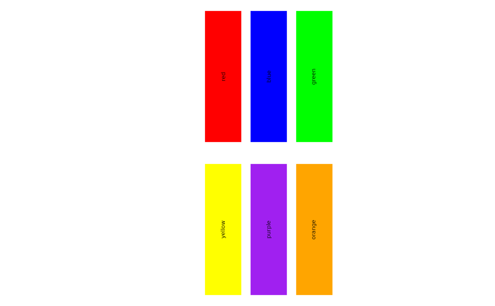

This function displays color palettes using ggplot2.
Arguments
- palettes
A list of color palettes. If `NULL`, uses default palettes.
- type
A character vector specifying the type of palettes to include. Default is "discrete".
- index
A numeric vector specifying the indices of the palettes to include. Default is `NULL`.
- palette_names
A character vector specifying the names of the SCP palettes to include. Default is `NULL`.
- return_names
A logical value indicating whether to return the names of the selected palettes. Default is `TRUE`.
- return_palettes
A logical value indicating whether to return the colors of selected palettes. Default is `FALSE`.
Examples
show_palettes(palettes = list(c("red", "blue", "green"), c("yellow", "purple", "orange")))
#> All available palettes:

all_palettes <- show_palettes(return_palettes = TRUE)
#> Error in show_palettes(return_palettes = TRUE): unused argument (return_palettes = TRUE)
names(all_palettes)
#> Error: object 'all_palettes' not found
all_palettes[["simspec"]]
#> Error: object 'all_palettes' not found
show_palettes(index = 1:10)
#> Error in show_palettes(index = 1:10): unused argument (index = 1:10)
show_palettes(type = "discrete", index = 1:10)
#> Error in show_palettes(type = "discrete", index = 1:10): unused arguments (type = "discrete", index = 1:10)
show_palettes(type = "continuous", index = 1:10)
#> Error in show_palettes(type = "continuous", index = 1:10): unused arguments (type = "continuous", index = 1:10)
show_palettes(palette_names = c("Paired", "nejm", "simspec", "Spectral", "jet"), return_palettes = TRUE)
#> Error in show_palettes(palette_names = c("Paired", "nejm", "simspec", "Spectral", "jet"), return_palettes = TRUE): unused arguments (palette_names = c("Paired", "nejm", "simspec", "Spectral", "jet"), return_palettes = TRUE)